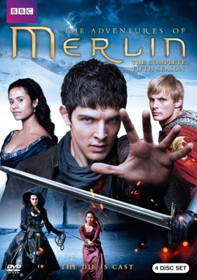
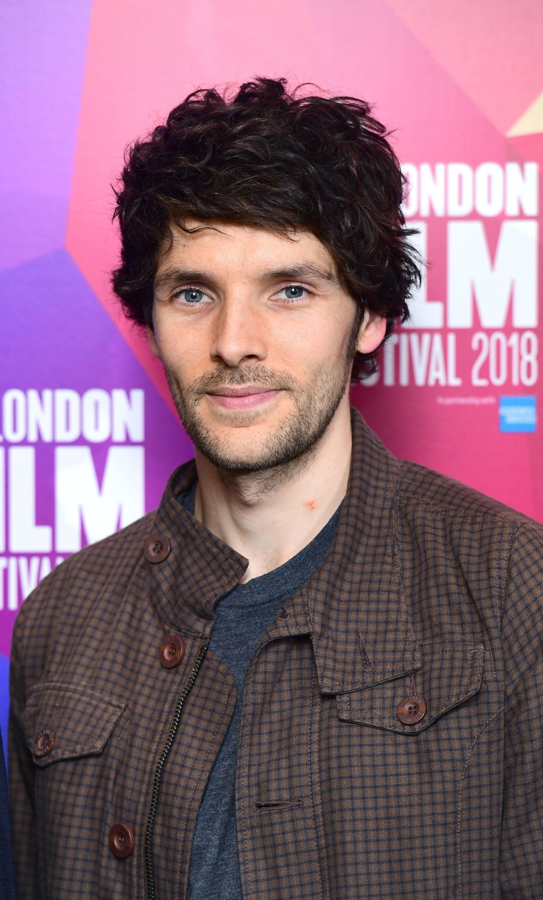
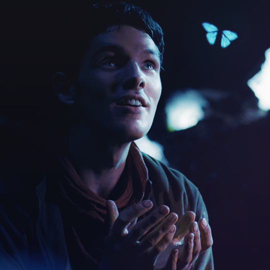

DAILY-TAINMENT

Merlin is a three-part 1998 television miniseries which originally aired on NBC that retells the legend of King Arthur from the perspective of the wizard Merlin. Sam Neil starts in the title in a story that covers not only the rise and fall of Camelot but also the phase in the legendary history of Britain that precedes it. The film deviates from more traditional versions of the legend, notably by including new characters such as Queen Mab and by keeping Merlin through the whole reign of King Arthur over Britain (whereas in older versions Merlin left earlier on in the king's reign). The film was followed by a sequel in 2006, Merlin's Apprentice, which was more loosely connected with traditional Arthurian legend

Merlin, an elderly man telling his life story, describes a Britain faced with rulers and invasion that are increasingly destructive to its people. Queen Mab seeks to reclaim her power by drawing people back to the "Old Ways". To do so, she creates a wizard named Merlin, whom she intends to champion her crusade. Merlin's mother dies giving birth to him and he is raised by his guardian, Ambrosia, until his magic emerges.

The film was produced by Dyson Lovell and directed by Steve Barron. The story is by Edward Khmara with the teleplay written by David Stevens and Peter Barnes. Illustrator Alan Lee served as the film's conceptual designer. Despite heavy fantasy elements, the production is historically accurate to a degree, in keeping with the probable origins of the Arthurian legend in Sub-Roman Britain. The costumes and props used in the film include Dark Age or Early Medieval Celtic and Roman-style weapons such as iron Age sword and armor, while other Arthurian films like Excalibur, Knights of the Round Table and First Knight use High Medieval or Late Medieval-style weapons.